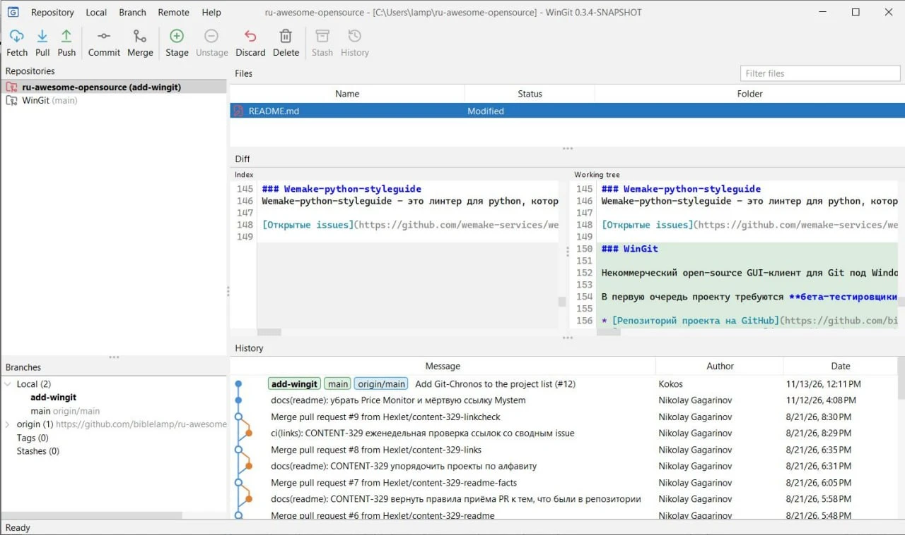

WinGit
WinGitGetting started
From installation to your first commit in about 15 minutes. No Git experience needed.
-
Install Git
WinGit uses the Git installed on your computer to make commits and talk to servers. Download Git for Windows, run the installer and keep all the default options.
On Linux, install the
gitpackage of your distribution, for examplesudo apt install git. -
Tell Git your name and email
Git writes them into every commit, and without them it refuses to create one. You do this only once. Open the Command Prompt (Start menu, type cmd, press Enter) and run these two commands with your own name and email:
git config --global user.name "Jane Doe" git config --global user.email "jane@example.com"
If you use GitHub, give the email of your GitHub account, so your commits are linked to your profile.
-
Install WinGit
Open WinGit in the Microsoft Store and click Get. WinGit appears in the Start menu and the Store keeps it up to date.
Cannot use the Microsoft Store? Download the installer (MSI) from the home page and run it. Prefer not to install anything? Download the ZIP, unpack it into any folder and start
WinGit.exe. -
Add a repository
A repository is a project folder whose history Git keeps. There are two ways to add one:
- From a server (GitHub, GitLab, …): Repository → Clone… (Ctrl+Shift+O), paste the repository address, for example
https://github.com/user/project.git, choose a folder and click Clone. - A folder on your disk: Repository → Add or Create… (Ctrl+O) and select the folder. If it isn't a repository yet, WinGit offers to create one.
The repository opens right away and stays in the list on the left; next time, open it with a double-click.
The first time you connect to a server, Git may open a sign-in window (Git Credential Manager). Sign in as usual: WinGit never sees or stores your password.

- From a server (GitHub, GitLab, …): Repository → Clone… (Ctrl+Shift+O), paste the repository address, for example
-
See your changes
Edit any file in the repository folder. WinGit notices it and shows the file in the Files list. Click it: Diff shows the previous version on the left and yours on the right, with the changed lines highlighted. Double-click the file to see its diff in a full-screen window.
A red repository name in the list means it has changes that are not committed yet.

The new lines are highlighted in green on the right. -
Make a commit
A commit saves a snapshot of your changes in the history. Click Commit on the toolbar (Ctrl+K), tick the files to include, describe briefly what you changed and click Commit. Commit & Push also sends it to the server right away.
The new commit appears at the top of the History. Forgot something? Until you push, tick Amend last commit in the same window to fix the commit instead of making a new one.

-
Pull and push
- Push (Ctrl+Shift+K) uploads your commits to the server.
- Pull (Ctrl+T) brings in the commits others have pushed.
- Fetch only checks the server for news and doesn't change your files. When the repository icon turns green, there is something to pull. WinGit also fetches in the background; the interval is in Settings.

After Commit & Push the branch and its origin/…copy point to the same commit: it is on the server.

Something went wrong?
Open Help → About WinGit and click Copy Details. Then choose Help → Report an Issue (you need a GitHub account), describe what you did and what happened, and paste the copied details.